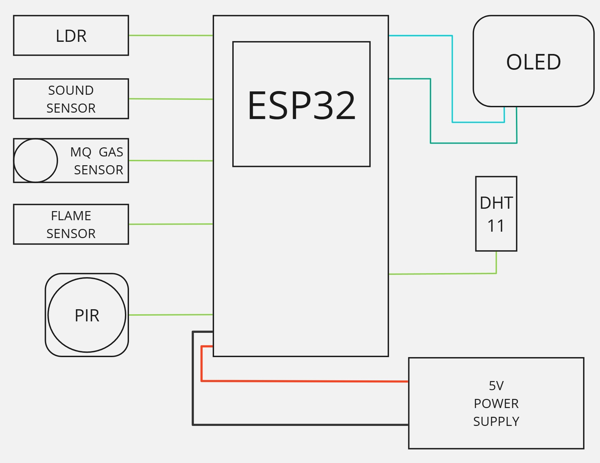
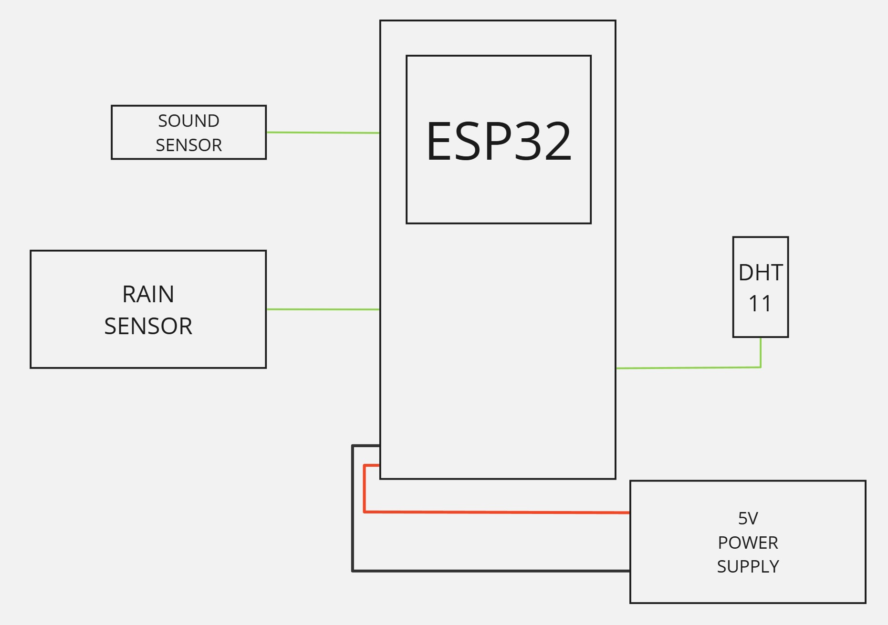
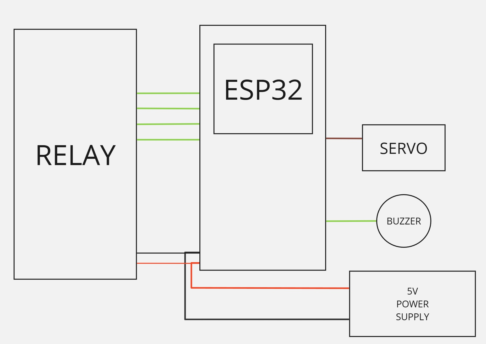
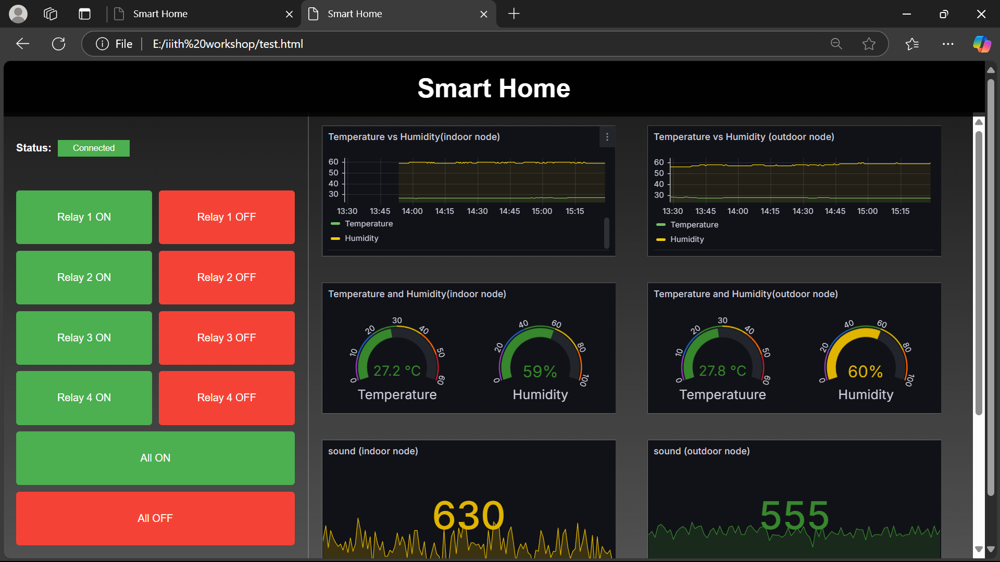
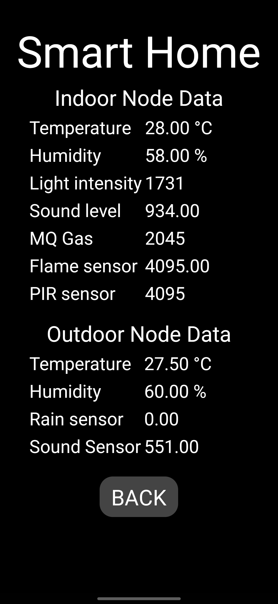
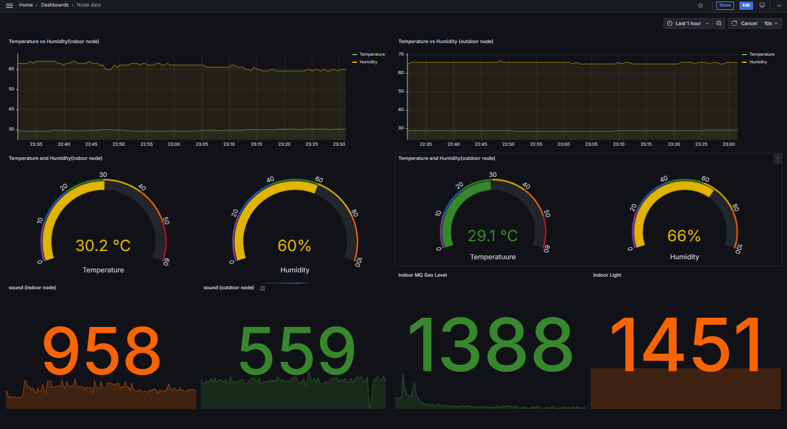
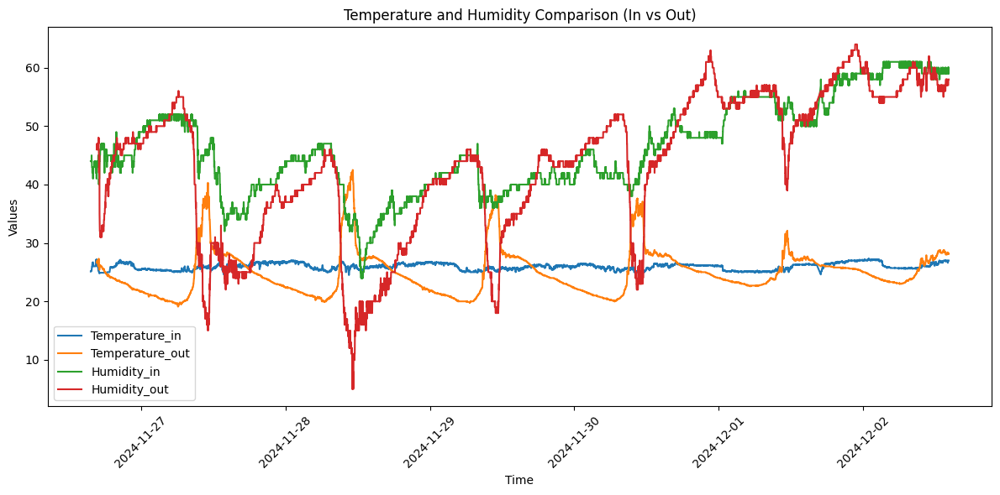
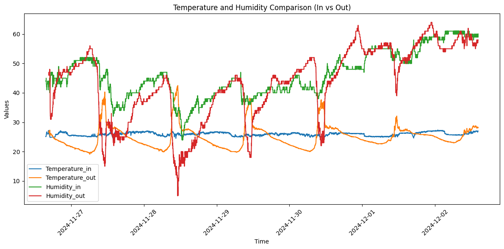
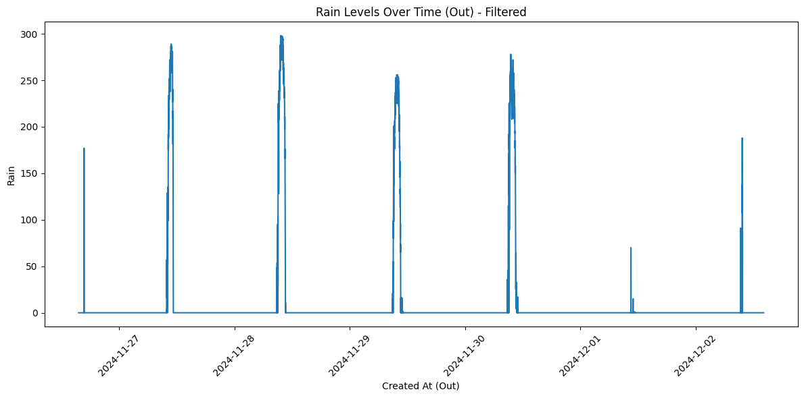

Motivation Project
The project seeks to address major issues in contemporary living spaces for increased efficiency, comfort, and safety. Conventional approaches to safety and environmental monitoring are either manual or do not have real-time reaction capabilities. For example, delayed fire alarms or undiscovered gas leaks can result in disastrous situations. The suggested system makes homes safer and more energy-efficient by automating environmental monitoring and reaction processes with sensors and actuators.
Moreover, the incorporation of cloud-based platforms such as ThingSpeak and oneM2M facilitates structured resource management and real-time data visualization. The project shows how technology may be easily incorporated into daily life to enhance general well-being by utilizing automation and the Internet of Things.
List of Required Components
- Microcontroller (ESP32):Serves as the central processing unit, gathering data from sensors and sending it over Wi-Fi to cloud platforms.
- Sensors and Actuators :
- Temperature & Humidity (DHT11): Monitors comfort levels.
- Light Sensor (LDR): Measures lighting conditions to optimize energy usage.
- Sound Sensor: Detects noise levels, ensuring a peaceful environment.
- Gas Sensor (e.g., MQ series): Identifies the presence of harmful gases.
- Flame Sensor: Detects fire hazards.
- PIR Sensor: Tracks motion for security and automation.
- Rain Sensor: Tracks rainfall for weather updates.
- Relay: Trigger devices or controls appliances
- Servo: Handles actuation tasks
- OLED: Displays relevant data
- Communication Platform:
- Wi-Fi enabled by ESP32 for cloud data transfer.
- Cloud Platforms:
- ThingSpeak: Real-time data storage and visualization.
- oneM2M: A standardized resource tree structure for efficient data management.
- Dashboard Tools:
- Grafana: Displays real-time and historical trends for data analysis.
- Web/Mobile Applications: Provides user-friendly interfaces for interaction.
System Architecture:
.jpg)
Indoor Node
The indoor node's purpose is to keep an eye on the home's environmental conditions and send out safety alerts, especially in the event of a gas leak or fire. It operates independently, gathering information, processing it, and sending out real-time alarms.
By keeping an eye on important variables including light intensity, temperature, humidity, gas levels, sound, flame, and motion, the goal is to create a secure and cozy indoor environment. The node guarantees quick hazard detection and promptly alerts the user. Circuit diagram is shown below.
Components:
- Sensors:
- LDR (Light Dependent Resistor):Measures the intensity of light to optimize energy use.
- DHT (Temperature and Humidity Sensor): Tracks indoor comfort conditions.
- Sound Sensor:Monitors noise levels for maintaining a quiet environment.
- LPG Gas Sensor:Detects gas leaks, preventing potentially hazardous situations.
- Flame Sensor: Alerts in case of fire.
- PIR Sensor (Passive Infrared): Detects human motion for security and automation.
- Microcontroller
- ESP32: Acts as the processing unit, collecting and transmitting data to cloud platforms.
Outdoor Node:
With an emphasis on weather and noise levels, the outdoor node collects environmental data from the surrounding area. It offers information about environmental factors that may have an impact on safety and comfort.
The goal is to help with weather forecasting and noise pollution studies by keeping an eye on external environmental characteristics such as temperature, humidity, rainfall, light intensity, and sound levels. Circuit Diagram is shown below.
Components:
- Sensors:
- DHT: Tracks temperature and humidity for weather analysis.
- Rain Sensor: Detects precipitation levels for weather updates..
- Sound Sensor: Monitors environmental noise pollution.
- Microcontroller
- ESP32: Gathers data from sensors and transmits it to cloud platforms.
- Communication Protocols:
- ThingSpeak: For data storage and visualization.
- OneM2MFor structured resource management and integration with other nodes.
Actuation Node:
As the system's command center, the actuation node responds to notifications and controls appliance automation in response to user input.
The goal is to regulate appliances like lights, fans, and ventilation systems for safety and energy efficiency, as well as to coordinate responses to alerts (such as gas leaks or fires).Circuit diagram is shown below.
Components:
- Actuators:
- Servo Motor (controls vents for ventilation).
- Buzzer (alerts users).
- Water Sprayer (for fire suppression).
- Relays (control appliances like lights and fans).
- Microcontroller
- ESP32: Processes alerts and controls actuators based on MQTT commands.
- Communication Protocols:
- MQTT:Subscribes to topics for receiving alerts and user commands.
Possible Methods for Verifying the Implementation
- Real-Time alerting: To ensure prompt alerting, simulate situations like gas leaks or loud noises.
- Actuation Testing: Verify that sprinklers, fans, and alarms react precisely to threshold violations.
- Dashboard Updates: Confirm that Grafana consistently shows both historical and real-time data.
- Integration: Verify that cloud platforms can communicate with both interior and outdoor nodes.
Webpage: The Central Monitoring Hub
The webpage is designed as the primary user interface for interacting with the Smart home environmental monitoring system. Its primary purpose is to offer centralized real-time data visualization and enable appliance control from a web platform.
Purpose
- To centralize real-time data monitoring.
- Provide intuitive controls for appliances.
Key Features:
- Real-Time Data Charts: : Utilizes Grafana to fetch and display data from the cloud (ThingSpeak).
- Device Control: Offers MQTT-based buttons for controlling appliances.
- User-Friendly Design: Simplifies operation for seamless interaction.

Mobile App: Extending the System on the Go
The mobile app complements the webpage by offering a portable solution for monitoring and controlling the system remotely.
Purpose:
- To enable system access anywhere.
- Provide real-time updates and remote control capabilities.
Key Features:
- Control Commands: Uses MQTT to manage appliances directly.
- Data Monitoring: Displays parsed data from ThingSpeak.
- Alert Notifications:Sends hazard alerts (e.g., gas leaks or fire) directly to the user.

Grafana DashBoard:
Click to import json code for Dashboard Integration and Data Flow
Data Collection:
Indoor and outdoor sensor nodes continuously collect environmental data, including temperature, humidity, light levels, and hazards like gas or flame presence. Immediate detection of hazards ensures rapid response.
Data Communication:
The collected data is sent to the ThingSpeak and oneM2M platforms for storage and processing. Alerts, including hazard warnings, are transmitted via MQTT and Telegram for user awareness.
Data Visualization:
Grafana, integrated with ThingSpeak, provides interactive and clear graphical representations of the sensor data, helping users understand environmental conditions at a glance.
System Control:
Control of appliances is facilitated through:
- Thewebpage interface, which allows users to send MQTT commands.
- The mobile app, , enabling remote management and monitoring of appliances.
Data Analysis:
Temperature Comparison For indoor and outdoor node :
The outdoor node shows a peak temperature around 11:00 AM as there is presence of direct sunlight and the lowest temperature around 6:00 AM. The highest recorded temperature is 43°C, and the lowest is 19°C.
For the indoor node, temperature variations are smaller, staying between 25°C and 27°C.

Humidity Comparison for Indoor and Outdoor Node
The humidity trends for indoor and outdoor nodes are similar but with a slight offset. Around 11:00 AM, humidity is at its lowest due to higher temperatures.
 

Rain sensor analysis:
The rain sensor detects some readings even without rain, likely due to morning dew between 10:00 and 11:00 AM.
Prediction on Temperature and Humidity Data
Here we are using LSTM model for Prediction
The RMSE values indicate the performance of the LSTM model in predicting temperature and humidity. The indoor temperature RMSE (0.0535) is significantly lower than outdoor temperature RMSE (0.1705), suggesting better accuracy for indoor predictions. Similarly, the model performs slightly better for outdoor humidity (0.8909) compared to indoor humidity (1.1630), highlighting room for improvement in humidity predictions.
Conclusion
IoT technologies integrated into the Smart Home Environmental Monitoring System ensure that modern homes are safer, more efficient, and more comfortable. The selection of sensors is a crucial component, directly influencing data accuracy, reliability, and ease of integration with the ESP32 microcontroller.
Accordingly, based on observations and identified areas for improvement, the project emphasizes shifting to digital sensors where applicable. Digital options, such as I2C-based sensors, outperform their analog counterparts by reducing noise interference and ensuring precise, consistent readings. Specifically:
- Lux sensors are proposed as replacements for LDRs, providing better and more direct measurements of light intensity in lux.
- Digital sound sensors are recommended to eliminate the fluctuations typically observed with analog sound sensors.
- For gas monitoring, analog gravity sensors are preferred for their sensitivity and reliability, while remaining open to exploring digital alternatives.
While the analog pins on the ESP32 occasionally exhibit inconsistent trends due to noise, these challenges have been largely mitigated through the use of digital communication protocols like I2C. The current DHT sensors for temperature and humidity have demonstrated reliable data collection and are recommended for continued use.
This transition to digital sensors enhances the system's accuracy, efficiency, and responsiveness to real-time environmental changes. Additionally, the system demonstrates cutting-edge smart living capabilities with its robust architecture of indoor, outdoor, and actuation nodes, seamlessly integrating with platforms like MQTT, ThingSpeak, oneM2M, and Grafana.
In conclusion, the Smart Home Environmental Monitoring System is a scalable, adaptable, and innovative solution for real-time monitoring and automation. The integration of digital sensors solidifies its position as a high-performance and reliable system, paving the way for safer, smarter, and more sustainable living environments.